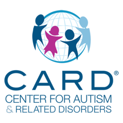
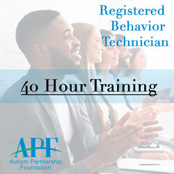
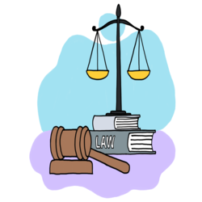

Hello! My name is Katelyn Encinas, and currently I am a first-year college student attending the University of California, Riverside. I am majoring in Sociology right now, but I am in the process of switching to the Sociology: Law and Society major, which aligns more closely with my long-term goal of attending law school. My academic and professional interests lie in exploring how legal systems, social institutions, and power structures function. My coursework has introduced me to foundational sociological theories as well as empirical research methods, and I look forward to diving deeper into other topics like criminology, legal ethics, and social movements that are learned in the Law and Society concentration. Through the Sociology: Law and Society major, I aim to strengthen my understanding of how historical and systemic inequalities are maintained through legal and institutional frameworks. I believe this knowledge is essential for anyone looking to enter the legal field with the intention of driving meaningful reform. UC Riverside has provided me with an enriching environment to expand my view on the world and engage with very complex societal issues. The diverse perspectives I encounter in class discussions challenge me to think critically and refine my communication skills, which are both essential for the future I aspire to have in law. I hope to eventually pursue a career in civil rights law, where I can advocate for equity and systemic reform. However, I am not yet set on which law I want to practice in my career and I hope to have exposure to the different types of law in law school. In addition to academics, I am seeking out opportunities for research, volunteer work, and leadership roles on and off of campus. This upcoming year, I am hoping to find great networking opportunities through rushing the professional pre-law fraternity, Phi Alpha Delta. This program offers an enriching environment for aspiring legal professionals through networking events, mentorship programs, LSAT prep, and exposure to various legal fields. I believe that joining this community will allow me to further cultivate my academic interests while building professional connections with like-minded students, law students, and alumni who are already navigating the legal profession. The guidance and structure the fraternity provides will support my preparation for law school and help me stay motivated as I work toward my long-term goals.I believe that a well rounded undergraduate experience will help me become not only a stronger law school applicant but also a more empathetic and informed advocate. I am very excited to continue learning and gaining both knowledge and experience that will allow me to contribute meaningfully to the world around me. I hope to sharpen my critical thinking, analytical writing, and public speaking abilities. These skills are not only crucial for success in law school but are also key tools for advocacy work and civic engagement. I want to take full advantage of every learning opportunity available, from internships to seminars, to ensure I am fully prepared for the demands of a legal career.
Working as a Behavior Technician at the Center for Autism and Related Disorders (CARD) has been one of the most fulfilling, rewarding, and transformative experiences of my life so far. This role has not only deepened my understanding of autism and behavioral science but has also given me the opportunity to make a meaningful impact in the lives of children and families. Every session I conduct reinforces the importance of patience, empathy, and the power of positive reinforcement. Being able to help individuals communicate their needs in healthier, more effective ways is truly both rewarding and inspiring. At CARD, I work one-on-one with clients to implement Applied Behavior Analysis (ABA) therapy programs tailored to their individual goals and developmental needs. Each child I work with has their own unique personality, strengths, and challenges, and it’s incredibly rewarding to see their progress over time. Whether it's helping a client develop language skills, increase social interactions, or reduce maladaptive behaviors, the change we facilitate as technicians is often life-changing, for both the clients and their families. This experience has equipped me with a wide range of practical and interpersonal skills. I’ve. developed strong observational skills by tracking client behaviors and identifying patterns that inform treatment strategies. I’ve also learned how to write very detailed session notes, follow individualized behavior intervention plans, and collaborate effectively with Board Certified Behavior Analysts (BCBAs) and other clinical team members. Perhaps most importantly, I’ve learned how to communicate with both verbal and non-verbal clients in ways that are affirming, supportive, and respectful of their needs.Additionally, this role has strengthened my time management, adaptability, and problem-solving skills. Each day presents new challenges, whether it’s navigating a client’s behavioral episode or finding different creative ways to encourage skill acquisition. These experiences have not only made me a better technician but have also shaped how I approach interpersonal relationships, academic work, and my future career in law. Given how much I’ve grown through this position, I’m now starting to prepare to work towards earning my Board Certified Autism Technician (BCAT) credential. I see this as a natural next step in advancing my skills and professional development within the field of ABA. The certification will allow me to take on additional responsibilities, improve my clinical competency, and provide even more effective care to my clients. It also represents my commitment to continuous learning and my desire to contribute meaningfully to the autism services community. Although my long-term goal is to attend law school and pursue a career in civil rights law, my work at CARD has shown me how powerful direct service roles can be in driving change. It has helped me understand the real-world impact of policy, access to care, and communication rights. Whether in a courtroom or a therapy session, my ultimate goal remains the same: to support people in expressing themselves, accessing resources, and living fuller, more empowered lives. So far, being a Behavior Technician has truly shaped who I am and who I aspire to become. I am incredibly grateful for the lessons I’ve learned and the individuals I’ve been able to work with, and I look forward to continuing to grow in this role and apply these skills to my future law career.
When I’m not focused on academics, work, or stressing about the future, I really value spending time with the people, and pets, I care deeply about. I prefer to stay balanced, pursuing my goals while also making time to enjoy life outside of academics and work. For example, one of the things that brings me the most joy is spending time with my three dogs. Taking them on walks, being outside with them, playing fetch, and just seeing how happy they get over the smallest things helps me slow down and appreciate the little things in life. They’ve definitely taught me a lot about responsibility and patience, and they’ve become a big part of my routine and personal life. Additionally, I also come from a big family with 5 siblings, so I have grown up around a lot of different personalities. Being in that kind of environment taught me early on how to communicate clearly, be open-minded, and learn how to get along with people who may see things differently than I do. Growing up with so many siblings is truly an experience I am grateful for, despite the small arguments and bickering between siblings. It has really helped me become more adaptable and understanding, which is something I try to carry into all areas of my life, such as professionally and socially. In my free time, I enjoy watching movies or shows with my friends or family. I absolutely love trying new restaurants, especially dessert spots, and I always enjoy exploring new places when I get the chance to travel. Being outdoors is something I really appreciate, whether it’s going on walks, sitting in the sun, or just getting out of the house for some fresh air. Although I have fairly big academic and career goals, like going to law school one day, I know how important it is to stay grounded in who I am outside of those ambitions. I really do try to make time for the things that make me feel happy and connected, and that help me grow as a person beyond the classroom or workplace. Overall, I am someone who’s motivated, thoughtful, compassionate, open-minded, and always trying to find that balance between working hard and enjoying life. The relationships I have with my family, friends, and pets really shape who I am, and I’m excited to keep learning, growing, and figuring out what kind of future I want to build, not just in terms of a career, but also in the kind of person I continue becoming.
• Worked with children and adults on the spectrum
• Implemented Applied Behavior Analysis
• Implemented Assaultive Behavior Management
• Helped customers with fashion and styling
• Kept clothing department nice and tidy
• Inputted data
• Reviewed records
• Kept data updated
• Regularly backed up data and records


